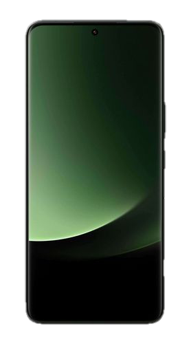
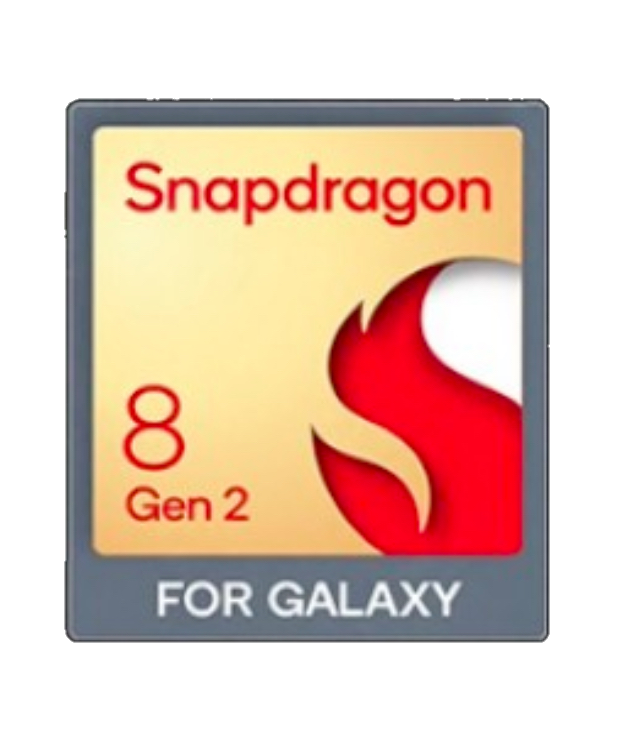
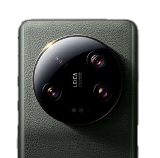
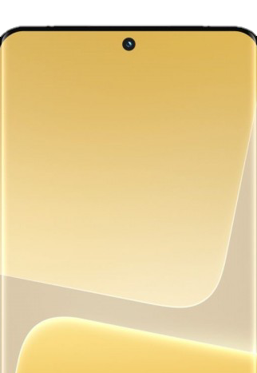
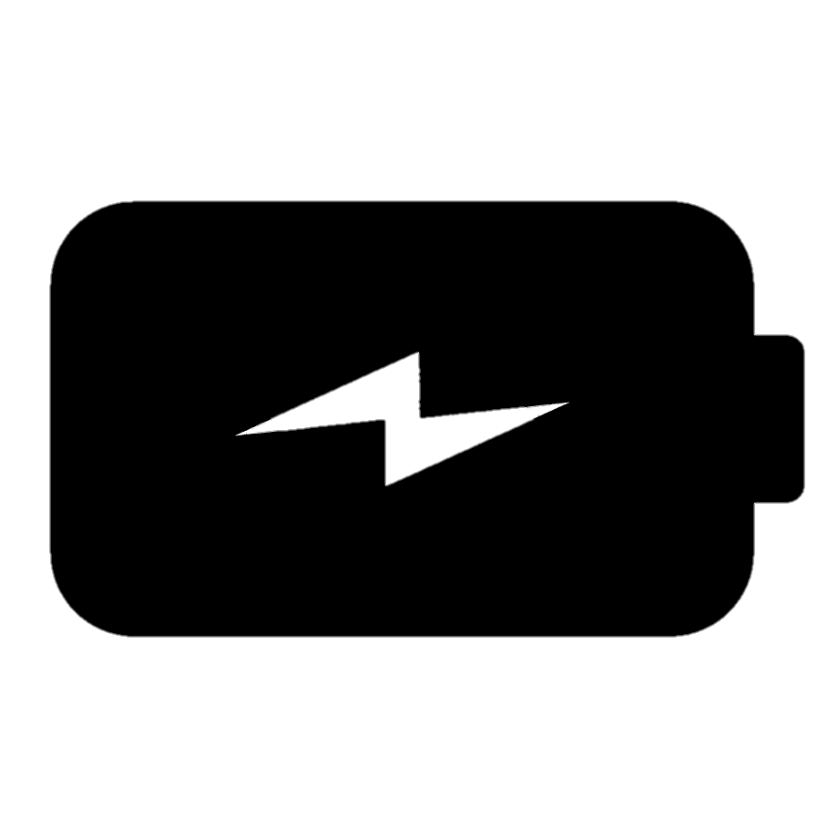
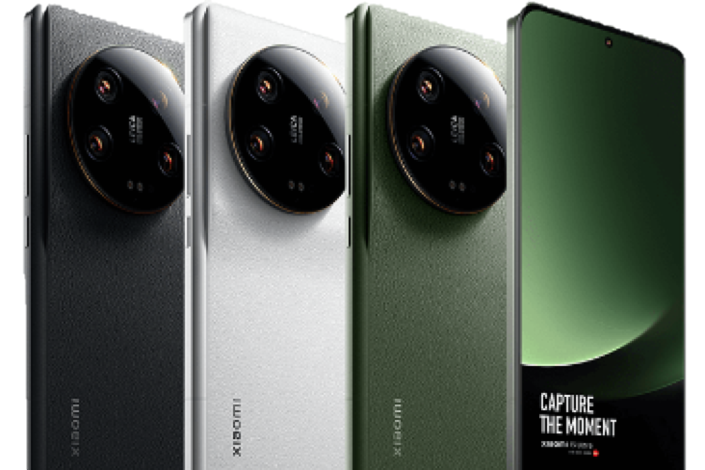

Layar
6.73 inches
1440 x 3200 pixels
Corning Gorilla Glass Victus
LTPO AMOLED, 1B colors, 120Hz, Dolby Vision, HDR10+, 1300 nits (HBM), 2600 nits (peak)
Prosesor
Qualcomm SM8550-AB Snapdragon 8 Gen 2 (4 nm)
GPU Adreno 740
Android 13, MIUI 14
Kamera Belakang
Jumlah Kamera 4
50 MP (wide), f/1.9 & f/4.0
50 MP (ultrawide), f/1.8
50 MP (telephoto), f/1.8
50 MP (periscope telephoto), f/3.0
Wide: multi-directional PDAF, Laser AF, OIS; Ultrawide: Dual-Pixel PDAF; Tele: Dual-Pixel PDAF, OIS, perbesaran optik 3.2x; Periscope: Dual-Pixel PDAF, OIS, perbesaran optik 5x; Umum: Sistem optik Leica, Dual-LED flash, HDR, panorama, 67mm filter ring holder (opsional); Video: Hingga 8K@24fps, gyro-EIS
Kamera Depan
32 MP (wide), f/2.0
HDR, panorama, Video: 1080p@30fps
Baterai
Kapasitas: 5.000 mAh
Pengisian cepat 90W (klaim 100% dalam 35 menit), pengisian cepat nirkabel 50W (klaim 100% dalam 49 menit), pengisian balik nirkabel 10W
Warna
Hijau, Hitam, Putih